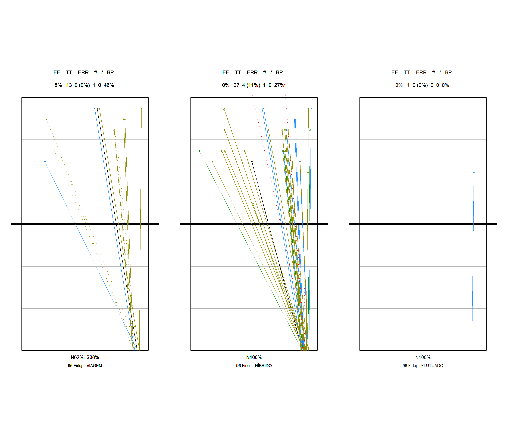

Chapter 4 Distribuicao - inicio
4.1 96 Firlej
4.1.1 Geral
## Warning: Using `size` aesthetic for lines was deprecated in ggplot2 3.4.0.
## i Please use `linewidth` instead.
## This warning is displayed once every 8 hours.
## Call `lifecycle::last_lifecycle_warnings()` to see where this warning was generated.

Figure 4.1: Gráficos por passador